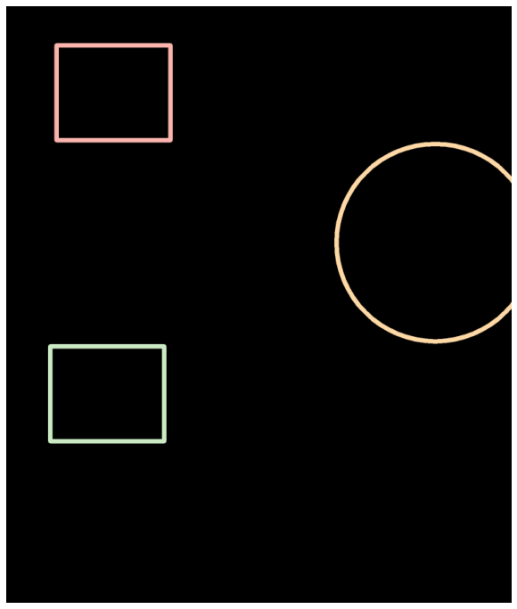
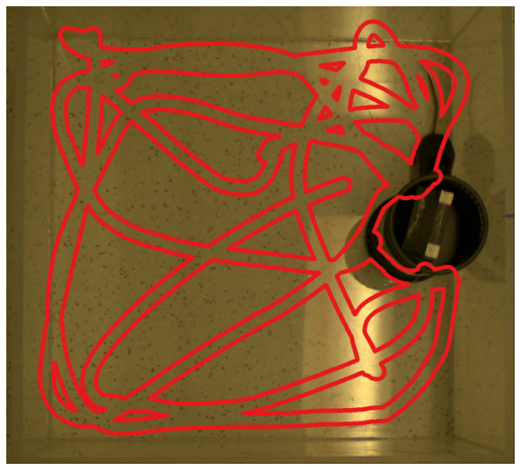
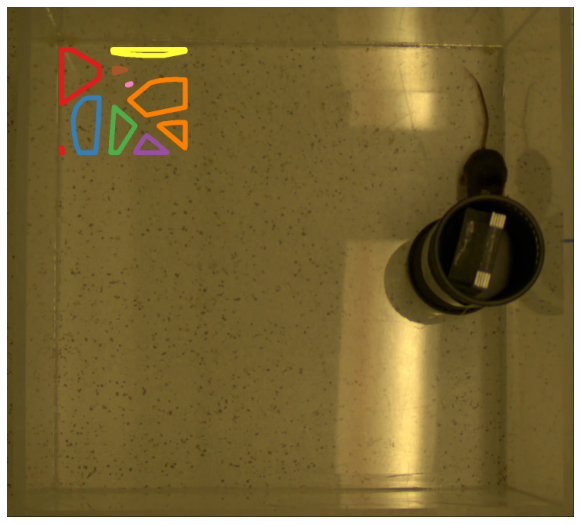
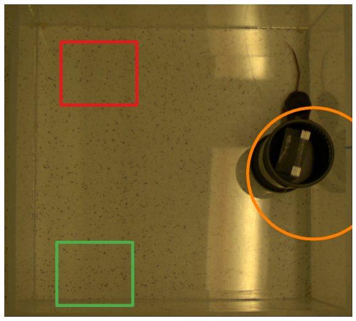

Geometry computations: Example 6
[2]:
from simba.mixins.geometry_mixin import GeometryMixin
from simba.mixins.config_reader import ConfigReader
from simba.utils.read_write import read_df, read_frm_of_video
from simba.utils.data import savgol_smoother
import numpy as np
import os
import cv2
import matplotlib.pyplot as plt
import matplotlib
dpi = matplotlib.rcParams['figure.dpi']
[3]:
FRAME_IDX = -1
BODY_PART = 'Nose'
VIDEO_NAME = 'SI_DAY3_308_CD1_PRESENT'
CONFIG_PATH = r'/Users/simon/Desktop/envs/simba/troubleshooting/mouse_open_field/project_folder/project_config.ini'
[4]:
config = ConfigReader(config_path=CONFIG_PATH, read_video_info=False)
config.read_roi_data()
frm = read_frm_of_video(os.path.join(config.video_dir, VIDEO_NAME +'.mp4'), frame_index=FRAME_IDX)
shapes, colors = GeometryMixin.simba_roi_to_geometries(rectangles_df=config.rectangles_df, circles_df=config.circles_df, polygons_df=config.polygon_df, color=True)
video_roi_shapes = list(shapes[VIDEO_NAME].values())
[5]:
#A HELPER FUNCTION TO HELP US VIEW THE GEOMETRIES CREATED IN THE BELOW CALLS WITHIN A JUPYTHER NOTEBOOK
def view_image(img):
height, width, depth = img.shape
figsize = width / float(dpi), height / float(dpi)
plt.figure(figsize=figsize)
plt.axis('off')
plt.imshow(img)
plt.show()
[6]:
frm = read_frm_of_video(os.path.join(config.video_dir, VIDEO_NAME +'.mp4'), frame_index=FRAME_IDX)
roi_shapes = GeometryMixin.view_shapes(shapes=video_roi_shapes, size=750, thickness=12, bg_clr= (0, 0, 0), color_palette='Pastel1')
view_image(roi_shapes)

[7]:
frm = cv2.cvtColor(read_frm_of_video(os.path.join(config.video_dir, VIDEO_NAME +'.mp4'), frame_index=FRAME_IDX), cv2.COLOR_RGB2BGR)
roi_shapes = GeometryMixin.view_shapes(shapes=video_roi_shapes, size=750, thickness=12, bg_img=frm, color_palette='Pastel1')
view_image(roi_shapes)

[8]:
data_path = os.path.join(config.outlier_corrected_dir, VIDEO_NAME + f'.{config.file_type}')
df = read_df(data_path, file_type=config.file_type)
animal_data = df[['Nose_x', 'Nose_y']].values
animal_path = GeometryMixin.to_linestring(data=animal_data)
nose_path = GeometryMixin.view_shapes(shapes=video_roi_shapes + [animal_path], size=750, bg_img=frm, thickness=12, color_palette='Pastel1')
view_image(nose_path)

[9]:
frm = cv2.cvtColor(read_frm_of_video(os.path.join(config.video_dir, VIDEO_NAME +'.mp4'), frame_index=FRAME_IDX), cv2.COLOR_RGB2BGR)
animal_data = savgol_smoother(data=animal_data, fps=15, time_window=10000)
animal_path = GeometryMixin.to_linestring(data=animal_data)
animal_path_img = GeometryMixin.view_shapes(shapes=video_roi_shapes + [animal_path], size=750, bg_img=frm, thickness=12, color_palette='Pastel1')
view_image(animal_path_img)

[10]:
# CALUCLATE LENGTH IN METER OF THE PATH
GeometryMixin.length(shape=animal_path, pixels_per_mm=1.5, unit='m')
[10]:
12.895238446918457
[11]:
#GET FRAMEWISE DISTANCES IN MILLIMETER TO THE TOP LEFT RECTANGLE
dist = GeometryMixin.locate_line_point(path=animal_path, px_per_mm=1.5, fps=15, geometry=shapes[VIDEO_NAME]['Top_left'])
dist['raw_distances']
[11]:
array([241.6898558 , 236.53645033, 231.39810449, ..., 355.00869074,
355.36371508, 355.63664313])
[12]:
#GET FRAMEWISE DISTANCES IN MILLIMETER TO THE BOTTOM LEFT RECTANGLE
dist = GeometryMixin.locate_line_point(path=animal_path, px_per_mm=1.5, fps=15, geometry=shapes[VIDEO_NAME]['Bottom_left'])
dist['raw_distances']
[12]:
array([313.83786515, 308.08441929, 302.19776243, ..., 416.43656028,
417.00383123, 417.52029752])
[13]:
#GET FRAME TIME STAMPS WHEN ANIMAL IS 10CM OR LESS FROM THE CAGE ROI
cage_dist = GeometryMixin.locate_line_point(path=animal_path, px_per_mm=1.5, fps=15, geometry=shapes[VIDEO_NAME]['Cage'])
np.argwhere(dist['raw_distances'] < 100).flatten() / 15
[13]:
array([ 2.13333333, 2.2 , 2.26666667, 2.33333333,
2.4 , 2.46666667, 2.53333333, 2.6 ,
2.66666667, 2.73333333, 2.8 , 2.86666667,
2.93333333, 3. , 3.06666667, 3.13333333,
3.2 , 3.26666667, 3.33333333, 3.4 ,
3.46666667, 3.53333333, 3.6 , 3.66666667,
3.73333333, 3.8 , 3.86666667, 3.93333333,
4. , 4.06666667, 4.13333333, 4.2 ,
4.26666667, 4.33333333, 4.4 , 4.46666667,
4.53333333, 4.6 , 4.66666667, 4.73333333,
4.8 , 4.86666667, 4.93333333, 5. ,
5.06666667, 5.13333333, 5.2 , 5.26666667,
5.33333333, 5.4 , 5.46666667, 5.53333333,
5.6 , 5.66666667, 5.73333333, 5.8 ,
5.86666667, 5.93333333, 6. , 6.06666667,
6.13333333, 6.2 , 6.26666667, 6.33333333,
6.4 , 6.46666667, 6.53333333, 6.6 ,
6.66666667, 6.73333333, 6.8 , 6.86666667,
6.93333333, 7. , 7.06666667, 7.13333333,
7.2 , 7.26666667, 7.33333333, 7.4 ,
7.46666667, 7.53333333, 7.6 , 7.66666667,
79.33333333, 79.4 , 79.46666667, 79.53333333,
79.6 , 79.66666667, 79.73333333, 79.8 ,
79.86666667, 79.93333333, 80. , 80.06666667,
80.13333333, 80.2 , 80.26666667, 80.33333333,
80.4 , 80.46666667, 80.53333333, 80.6 ,
80.66666667, 80.73333333, 80.8 , 80.86666667,
80.93333333, 81. , 81.06666667, 81.13333333,
81.2 , 81.26666667, 81.33333333, 81.4 ,
81.46666667, 81.53333333, 81.6 , 81.66666667,
81.73333333, 81.8 , 81.86666667, 81.93333333,
82. , 82.06666667, 82.13333333, 82.2 ,
82.26666667, 82.33333333, 82.4 , 82.46666667,
82.53333333, 82.6 , 82.66666667, 82.73333333,
82.8 , 82.86666667, 82.93333333, 83. ,
83.06666667, 83.13333333, 83.2 , 83.26666667,
83.33333333, 83.4 , 83.46666667, 83.53333333,
83.6 , 83.66666667, 83.73333333, 83.8 ,
83.86666667, 83.93333333, 84. , 84.06666667,
84.13333333, 84.2 , 84.26666667, 84.33333333,
84.4 , 84.46666667, 84.53333333, 84.6 ,
84.66666667, 84.73333333, 84.8 , 84.86666667,
84.93333333, 85. , 85.06666667, 85.13333333,
85.2 , 85.26666667, 85.33333333, 206.2 ,
206.26666667, 206.33333333, 206.4 , 206.46666667,
206.53333333, 206.6 , 206.66666667, 206.73333333,
206.8 , 206.86666667, 206.93333333, 207. ,
207.06666667, 207.13333333, 207.2 , 207.26666667,
207.33333333, 207.4 , 207.46666667, 207.53333333,
207.6 , 207.66666667, 207.73333333, 207.8 ,
207.86666667, 207.93333333, 208. , 208.06666667,
208.13333333, 208.2 , 208.26666667, 208.33333333,
208.4 , 208.46666667, 208.53333333, 208.6 ,
208.66666667, 208.73333333, 208.8 , 208.86666667,
208.93333333, 209. , 209.06666667, 209.13333333,
209.2 , 209.26666667, 209.33333333, 209.4 ,
209.46666667, 209.53333333, 209.6 , 209.66666667,
209.73333333, 209.8 , 209.86666667, 209.93333333,
210. , 210.06666667, 210.13333333, 210.2 ,
210.26666667, 210.33333333, 210.4 , 210.46666667,
210.53333333, 210.6 , 210.66666667, 210.73333333,
210.8 , 210.86666667, 210.93333333, 211. ,
211.06666667, 211.13333333, 211.2 , 211.26666667,
211.33333333, 211.4 , 211.46666667, 211.53333333,
211.6 , 211.66666667])
[14]:
#BUFFER THE NOSE PATH WITH 3CM
frm = cv2.cvtColor(read_frm_of_video(os.path.join(config.video_dir, VIDEO_NAME +'.mp4'), frame_index=FRAME_IDX), cv2.COLOR_RGB2BGR)
buffered_path = GeometryMixin.buffer_shape(shape=animal_path, size_mm=30, pixels_per_mm=1.5)
buffered_path_img = GeometryMixin.view_shapes(shapes=[buffered_path], size=750, bg_img=frm, thickness=12, color_palette='Set1')
view_image(buffered_path_img)

[15]:
#CHECK IF THE BUFFERED PATH INTERSECTS THE TOP LEFT ROI
buffered_path.intersects(shapes[VIDEO_NAME]['Top_left'])
[15]:
True
[16]:
#GET THE PARTS OF THE TOP LEFT ROI WHICH IS NOT CROSSED BY THE BUFFERED PATH
frm = cv2.cvtColor(read_frm_of_video(os.path.join(config.video_dir, VIDEO_NAME +'.mp4'), frame_index=FRAME_IDX), cv2.COLOR_RGB2BGR)
not_crossed = GeometryMixin.difference(shapes=[shapes[VIDEO_NAME]['Top_left'], buffered_path])
not_crossed_img = GeometryMixin.view_shapes(shapes=[not_crossed], size=750, bg_img=frm, thickness=12, color_palette='Set1')
view_image(not_crossed_img)

[17]:
#GET THE PARTS OF THE BOTTOM LEFT ROI WHICH IS NOT CROSSED BY THE BUFFERED PATH
frm = cv2.cvtColor(read_frm_of_video(os.path.join(config.video_dir, VIDEO_NAME +'.mp4'), frame_index=FRAME_IDX), cv2.COLOR_RGB2BGR)
not_crossed = GeometryMixin.difference(shapes=[shapes[VIDEO_NAME]['Bottom_left'], buffered_path])
not_crossed_img = GeometryMixin.view_shapes(shapes=[not_crossed], size=750, bg_img=frm, thickness=12, color_palette='Set1')
view_image(not_crossed_img)

[20]:
#SHIFT ALL GEOMETRIES 100PX TO THE LEFT AND 50PX TOWARDS THE BOTTOM
frm = cv2.cvtColor(read_frm_of_video(os.path.join(config.video_dir, VIDEO_NAME +'.mp4'), frame_index=FRAME_IDX), cv2.COLOR_RGB2BGR)
shifted_geos = GeometryMixin.adjust_geometry_locations(geometries=video_roi_shapes, shift=(100, 50))
shifted_geos_img = GeometryMixin.view_shapes(shapes=shifted_geos, size=750, bg_img=frm, thickness=12, color_palette='Set1')
view_image(shifted_geos_img)

[22]:
# MAKE THE BOTTOM LEFT ROI AREA LARGER WITH 15CM AND SMOOTH EDGES
frm = cv2.cvtColor(read_frm_of_video(os.path.join(config.video_dir, VIDEO_NAME +'.mp4'), frame_index=FRAME_IDX), cv2.COLOR_RGB2BGR)
buffered_bottom_left = GeometryMixin.buffer_shape(shape=shapes[VIDEO_NAME]['Bottom_left'], size_mm=150, pixels_per_mm=1.5, cap_style='round')
buffered_bottom_left_img = GeometryMixin.view_shapes(shapes=[buffered_bottom_left], size=750, bg_img=frm, thickness=12, color_palette='Set1')
view_image(buffered_bottom_left_img)

[ ]: